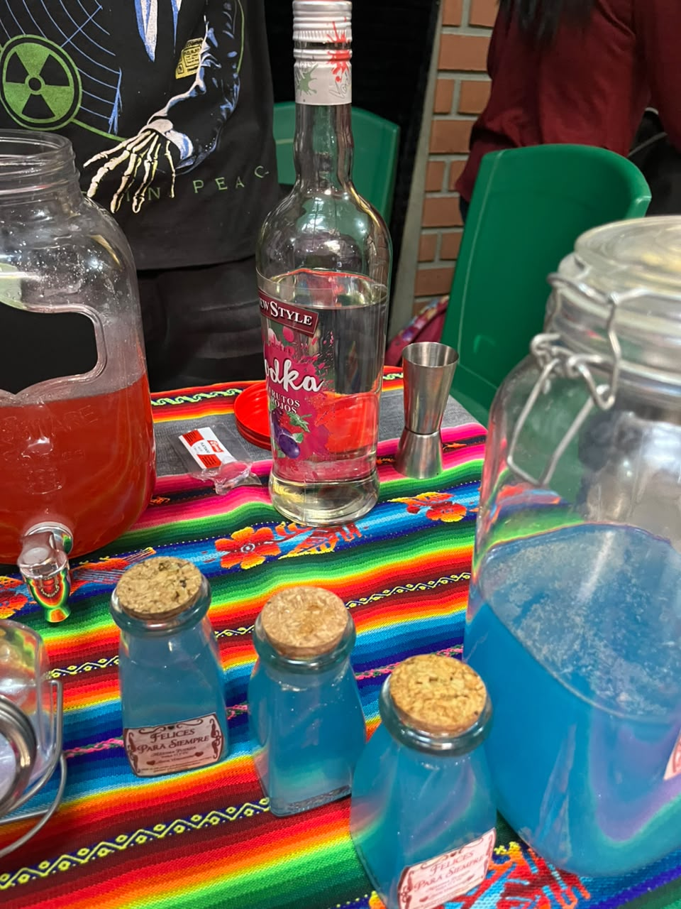
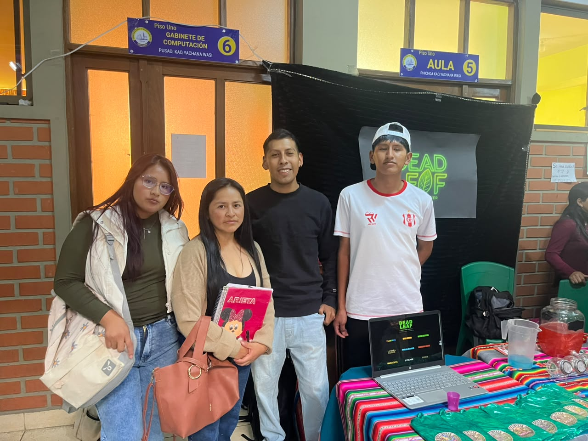
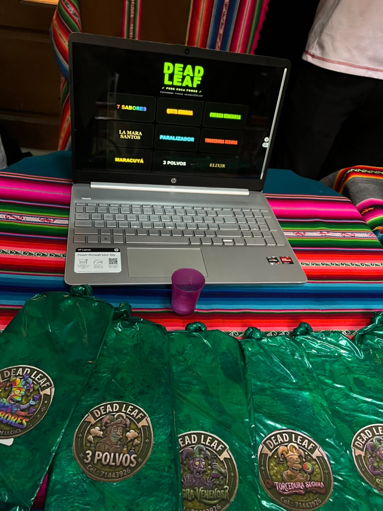

FEXPO ITSEC 2026 - ¡Bienvenidos!
En la FEXPO ITSEC Sucre se presentan diferentes ideas de negocio que muestran la iniciativa y creatividad de los emprendedores. Entre ellas se encuentra DEAD LEAF, un emprendimiento dedicado a la venta de coca machucada y algunas bebidas, dirigido exclusivamente a personas mayores de 18 años.



DEAD LEAF es un emprendimiento comercial de reciente creación que ofrece coca machucada y algunas bebidas. Su propuesta busca atender a un público adulto interesado en los productos que comercializa, brindando información sobre su disponibilidad y precio.
El negocio cuenta con aproximadamente un mes y medio de funcionamiento y comenzó con un capital inicial de 1.300 bolivianos. Esta inversión representa el punto de partida para desarrollar sus actividades comerciales y adquirir los productos destinados a la venta.
Uno de sus productos principales es la coca machucada, que tiene un precio de 25 bolivianos. Además, el emprendimiento ofrece algunas bebidas para ampliar las opciones disponibles para sus clientes.
DEAD LEAF establece como condición que sus productos se vendan únicamente a personas mayores de 18 años. Esta restricción forma parte de sus criterios de atención al público y debe respetarse de acuerdo con las normas aplicables a los productos que comercializa.
Entre las principales dificultades del emprendimiento se encuentra el abastecimiento de materia prima. Conseguir proveedores confiables y mantener una disponibilidad constante de productos representa un desafío para el funcionamiento del negocio.
Otra dificultad es la organización de las actividades comerciales. Para mejorar su funcionamiento, DEAD LEAF podría llevar un registro de compras y ventas, controlar su inventario, planificar los pedidos y organizar mejor el uso de su capital. Estas medidas ayudarían a reducir los problemas de abastecimiento y facilitarían la toma de decisiones.
La participación de DEAD LEAF en la FEXPO ITSEC permite dar a conocer el emprendimiento, presentar sus productos y mostrar los retos que enfrenta un negocio durante sus primeras etapas de funcionamiento.